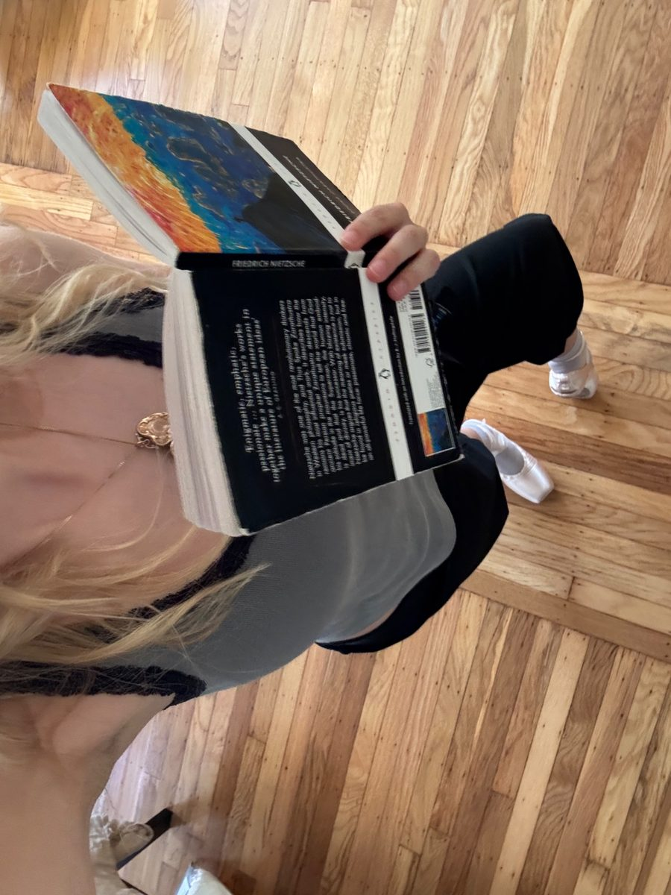

British-Canadian girl, currently spending time between London and SF. Background in physics and philosophy. Interests include: radioactivity, fine art, and education!

A dose calculator for iodine-125 brachytherapy seeds (model 6711), written in Python using the standard TG-43 method. It gives the dose rate at any point around one seed or several, and maps it. Checked against Carleton University’s published dose tables for this seed: 97% of points agree to within 1%.
Next step: train a model to outline the prostate in publicly available MRI scans, then compare the dose calculated with its outlines against the dose calculated with outlines drawn by experts.
Illustrator for SOTA, an SF-based zine about technology and culture. Drawn under the name Katherine Leidl.
Currently working on updating their website before the launch of Edition 2. Watch this space!
Co-author. Crystals 15 (3), 214, 2025.
MPhys project report, University of Manchester (PDF).
The report I wrote on my part of the work behind the paper: using machine learning (YOLOv5 and DeepSORT, in Python) to track annihilating defects in nanoparticle-doped liquid crystals.
Master’s Dissertation, University of Cambridge